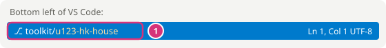
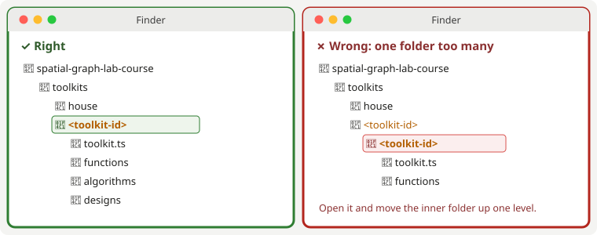

Page 8 of 12 · B. Make your toolkit
Make your toolkit with a chat assistant
A chat in the browser cannot see your files. You give it the toolkit kit, it gives you your folder as a zip, and you put the folder in place, check it, commit and push.
Your toolkit id: <toolkit-id> · changeYour toolkit id is not set on this page yet: or make it on page 6. Orange <toolkit-id> = replace with yours.
Before this page: Set up and Plan and claim (your branch is on GitHub).
01Checkpoint: page 6 done, on your branch
Done page 6, including claiming your branch? Then continue here.
Checkpoint: page 6 done, on your branch
Done page 6, including claiming your branch? Then continue here.
Open the course folder in VS Code (File › Open Recent); the bottom left must show your branch:

toolkit/<toolkit-id>, not main.It shows main
git switch toolkit/<toolkit-id>
Not claimed yet? Plan › Claim it on GitHub first.
02Download the toolkit kit
The zip the chat reads: its instructions, the guide and examples.
Download the toolkit kit
The zip the chat reads: its instructions, the guide and examples.
What is in it?
The AI's instructions (PROMPT.md), the toolkit guide, the Student API reference, a starter toolkit and the House toolkit as an example. The same kit is in the app: Guide › Toolkits & JSON › Make your own toolkit › Chat assistant.
03Ask the chat
Attach the kit, send your prompt, download the zip.
Ask the chat
Attach the kit, send your prompt, download the zip.
- Open a new chat and attach the kit zipAny AI chat that accepts files, such as claude.ai, chatgpt.com or gemini.google.com.
- Send your promptFrom Plan › Your prompt (filled in), or this one with the orange blanks filled in:
I've attached the Spatial Graph Lab toolkit kit. Read PROMPT.md and every file in it, then write my toolkit following it exactly. Give me the folder <toolkit-id>/ as a zip; if you cannot make files, give every file in its own code block, headed by its path. Toolkit id: ___ My idea: ___ Functions (and their attributes): ___ Algorithms: ___ Example design: ___
- Read its summaryAsk for changes now, in plain words.
- Download the zip it gives youIt lands in your Downloads folder.
The chat refuses the zip, or gives code instead of a zip
- Refuses the zip: unzip the kit and attach its
.mdfiles instead, or try another chat. - Code blocks instead of a zip: ask “Please give me the folder as a zip”. Still no zip? Try another chat, or ask your tutor: making each file by hand is slow and easy to get wrong.
04Put the folder in place
Unzip, then drag the folder into toolkits.
Put the folder in place
Unzip, then drag the folder into toolkits.
Drag the folder that has toolkit.ts directly inside it. Unzipping often adds one more folder level. If you open the folder and see only one more folder, open that one: that is the folder to drag.
Windows
- File Explorer › Downloads: right-click the zip › Extract All… › Extract. A new window shows the extracted folder.
- Open the course's
toolkitsfolder in a second window: in VS Code's explorer, right-clicktoolkits› Reveal in File Explorer. - Drag the folder with
toolkit.tsdirectly inside intotoolkits.

toolkit.ts directly in toolkits/<toolkit-id>/. Wrong: one folder too many.macOS
- Finder › Downloads. Safari often unzips by itself: a folder is already there. Otherwise double-click the zip.
- Open the course's
toolkitsfolder in a second window: in VS Code's explorer, right-clicktoolkits› Reveal in Finder. - Drag the folder with
toolkit.tsdirectly inside intotoolkits.

toolkit.ts directly in toolkits/<toolkit-id>/. Wrong: one folder too many.The folder's name must be exactly <toolkit-id>. The zip's own name may differ: that does not matter.
05Check it
The same checks GitHub runs on your branch.
Check it
The same checks GitHub runs on your branch.
In VS Code's terminal, one at a time:
npm run check:toolkit -- -t <toolkit-id>
You should see, at the end
PASSED: toolkit "hk-small-library" is ready.The last line counts. FAILED: …? Copy the whole red message into the chat and ask: “Fix exactly this and give me only the files you changed.”npm run typecheck
You should see
> spatial-graph-lab@0.1.0 typecheck > tsc --noEmit -p tsconfig.jsonand the prompt again. No red
error lines: the code checks out.What do the two checks do?
check:toolkit finds your folder, loads your toolkit as the app does and runs every algorithm on your example design. typecheck checks the code for mistakes. Did npm install never finish? Run it first (Set up › 11).
The chat sent fixed files: how do I put them in?
See step 08: replace them one file at a time.
06Try it in the app
Run the app on your laptop with your toolkit.
Try it in the app
Run the app on your laptop with your toolkit.
npm run dev
Open http://localhost:5173/?toolkit=<toolkit-id> › Open example… › your toolkit's design. Run your analyses in Analyse and transforms in Transform.
The terminal is busy while the app runs. Use a second terminal (+) for the next step; Ctrl+C stops the app.
07Commit and push
Save a snapshot of your folder, only your folder, and send it to GitHub.
Commit and push
Save a snapshot of your folder, only your folder, and send it to GitHub.
git add toolkits/<toolkit-id>
git status
Under “Changes to be committed” (green): only files in toolkits/<toolkit-id>/. Anything else there? Don't commit: put it back first.

A red package-lock.json? npm install changed it. It is not committed; put it back with git restore package-lock.json.
git commit -m "feat(<toolkit-id>): first version of my toolkit"
git push
toolkit/<toolkit-id> -> toolkit/<toolkit-id>.
PASSED, the push went through, and a green ✓ appears beside your latest commit on GitHub.
Using GitHub Desktop instead?
In Changes, tick only your toolkit's files (untick package-lock.json and anything else), write a summary, Commit to toolkit/…, then Push origin.
08Later changes
Give the chat your current files; replace what it changes, one file at a time.
Later changes
Give the chat your current files; replace what it changes, one file at a time.
- Commit firstSo that you can always go back (step 07).
- Ask the chatAttach the files you changed (or your whole folder as a zip) so it works on your current version, and ask it to give back only the files it changed.
- Replace file by fileIn VS Code, open each file it changed and replace its whole text (or drag the new file over the old one and choose Replace). Never unzip a new folder next to the old one: Windows adds “(1)” to names.
- See what changed, then check
git diff --stat
only files in your folder.
Then run the checks (step 05), commit and push.
09A design you drew in the app
Optional: make it an example design of your toolkit.
A design you drew in the app
Optional: make it an example design of your toolkit.
How to put a design from the app into designs/
- Draw it in the app with your toolkit active (your localhost address).
- Project › Export project: a
.project.jsonfile lands in Downloads. It holds each scenario's design. - Attach that file to your chat (or drag it into your toolkit folder for your agent) and ask: “Take the design of the scenario name from this project file and give me it as
designs/my-design.jsonfor my toolkit, with ametadata.nameandmetadata.description.” - Put the new file in
toolkits/<toolkit-id>/designs/, delete the.project.jsonfrom your folder if you put it there, then check, commit and push.
The design's text is also visible in the app: in a panel's view list at its top (it shows e.g. Graph 2D) choose Data, then JSON.

10All the commands, as one list
For reference only: run them one at a time from the steps above.
All the commands, as one list
For reference only: run them one at a time from the steps above.
Show the list (as the app's Guide shows it)
No Copy button here on purpose: lines starting with # are things you do by hand, and npm run dev keeps running.
git status # the first line must say "On branch main"; on another branch? run git switch main first git pull git switch -c toolkit/<toolkit-id> git commit --allow-empty -m "chore(<toolkit-id>): claim the toolkit name" git push -u origin toolkit/<toolkit-id> # you must see * [new branch]; "rejected" or "Everything up-to-date" means the name is taken: choose another one (never pull) # unzip: the folder must end up at toolkits/<toolkit-id>/ (toolkit.ts directly inside it) npm install npm run check:toolkit -- -t <toolkit-id> # it must end with PASSED: toolkit "<toolkit-id>" is ready. npm run typecheck npm run dev # try it at http://localhost:5173/?toolkit=<toolkit-id> (or the address npm run dev prints), then stop the server (Ctrl+C) git add toolkits/<toolkit-id> git status git commit -m "feat(<toolkit-id>): first version of my toolkit" git push